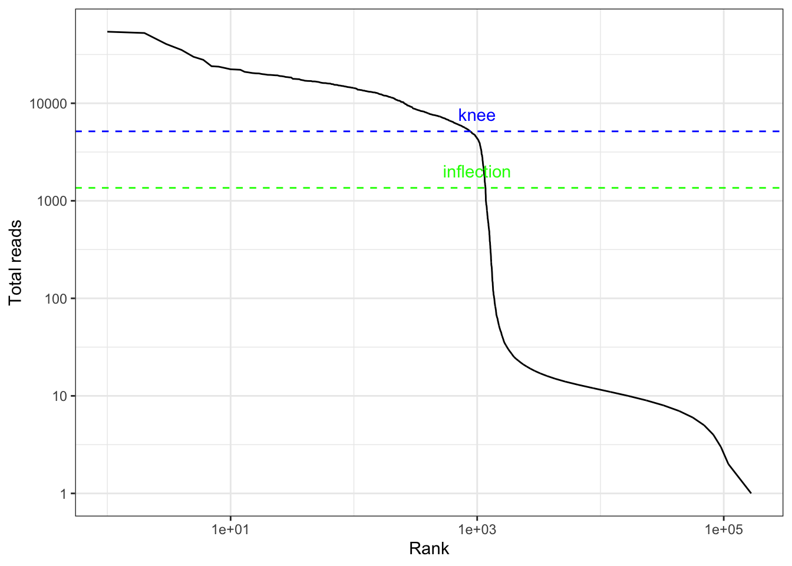
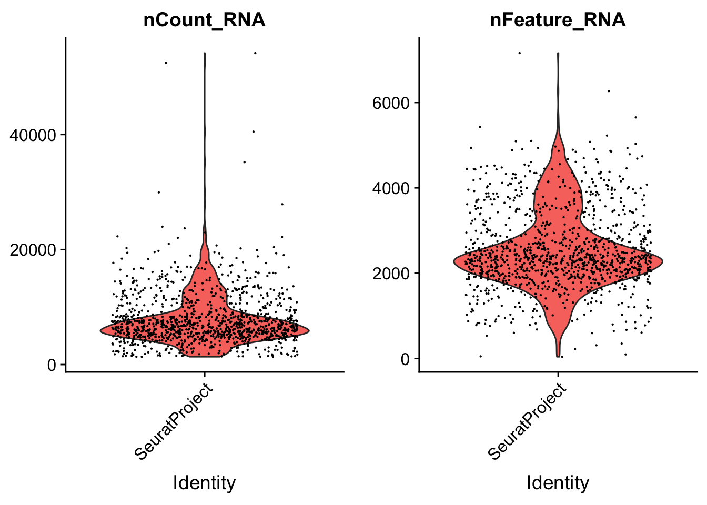
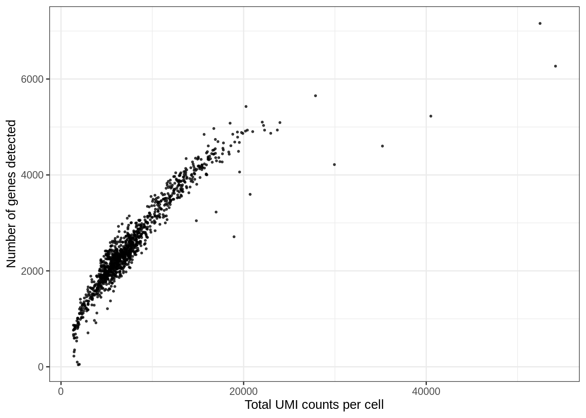
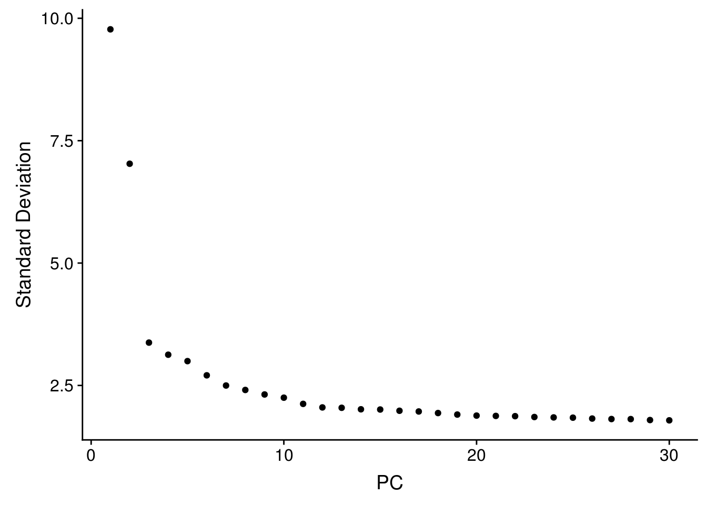
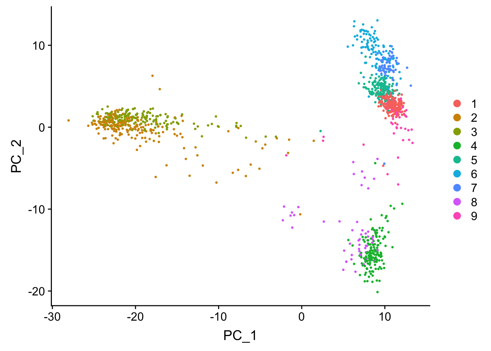
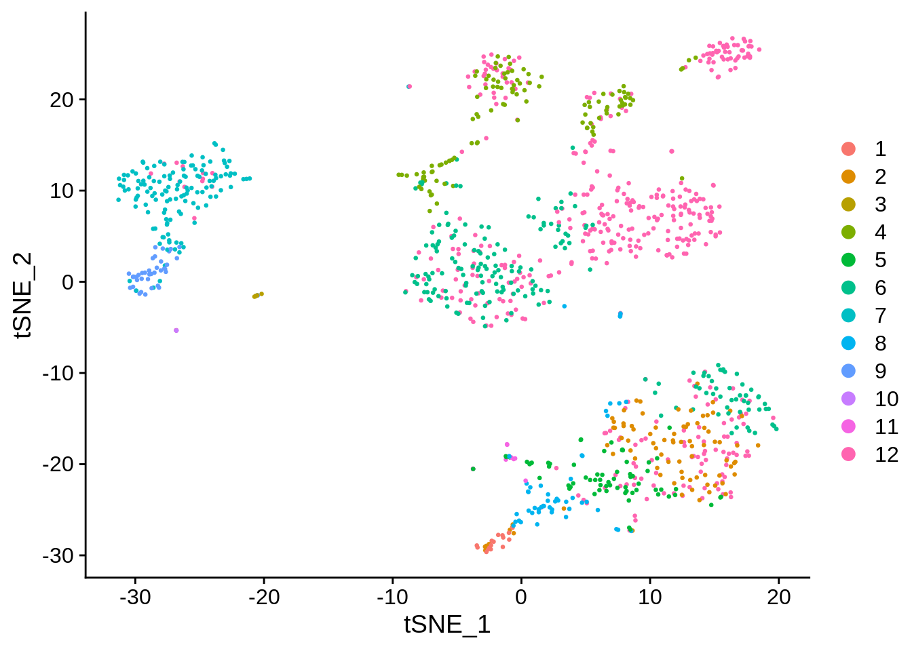

Last updated: 2019-06-23
Checks: 7 0
Knit directory: BUS_notebooks_R/
This reproducible R Markdown analysis was created with workflowr (version 1.4.0). The Checks tab describes the reproducibility checks that were applied when the results were created. The Past versions tab lists the development history.
Great! Since the R Markdown file has been committed to the Git repository, you know the exact version of the code that produced these results.
Great job! The global environment was empty. Objects defined in the global environment can affect the analysis in your R Markdown file in unknown ways. For reproduciblity it’s best to always run the code in an empty environment.
The command set.seed(20181214) was run prior to running the code in the R Markdown file. Setting a seed ensures that any results that rely on randomness, e.g. subsampling or permutations, are reproducible.
Great job! Recording the operating system, R version, and package versions is critical for reproducibility.
Nice! There were no cached chunks for this analysis, so you can be confident that you successfully produced the results during this run.
Great job! Using relative paths to the files within your workflowr project makes it easier to run your code on other machines.
Great! You are using Git for version control. Tracking code development and connecting the code version to the results is critical for reproducibility. The version displayed above was the version of the Git repository at the time these results were generated.
Note that you need to be careful to ensure that all relevant files for the analysis have been committed to Git prior to generating the results (you can use wflow_publish or wflow_git_commit). workflowr only checks the R Markdown file, but you know if there are other scripts or data files that it depends on. Below is the status of the Git repository when the results were generated:
Ignored files:
Ignored: .Rhistory
Ignored: .Rproj.user/
Ignored: BUS_notebooks_R.Rproj
Ignored: data/whitelist_v3.txt.gz
Ignored: output/out_pbmc1k/
Note that any generated files, e.g. HTML, png, CSS, etc., are not included in this status report because it is ok for generated content to have uncommitted changes.
These are the previous versions of the R Markdown and HTML files. If you’ve configured a remote Git repository (see ?wflow_git_remote), click on the hyperlinks in the table below to view them.
| File | Version | Author | Date | Message |
|---|---|---|---|---|
| Rmd | ced7654 | Lambda Moses | 2019-06-23 | Addded explanation of kallisto output |
| html | df6e9d6 | Lambda Moses | 2019-06-22 | Build site. |
| Rmd | 2b6460d | Lambda Moses | 2019-06-22 | Transposed knee plot |
| html | 3642b69 | Lambda Moses | 2019-06-22 | Build site. |
| Rmd | ac15697 | Lambda Moses | 2019-06-22 | Changed 10xv3 notebook to demonstrate TENxBUSData on PBMC data |
| Rmd | d73779a | Lambda Moses | 2019-06-22 | Changed 10xv3 notebook |
| Rmd | 06e9869 | Lambda Moses | 2019-03-01 | Adapted old notebooks to new version of BUSpaRse |
| html | 06e9869 | Lambda Moses | 2019-03-01 | Adapted old notebooks to new version of BUSpaRse |
| html | c465ce1 | Lambda Moses | 2019-02-14 | Build site |
| Rmd | f22beac | Lambda Moses | 2019-02-14 | Added CellRanger whiltelist clarification |
| Rmd | 000215e | Lambda Moses | 2019-02-14 | Clarified git cloning this repo and resolved swapped code chunks for output.sorted.bus |
| html | 71513e5 | Lambda Moses | 2019-02-14 | Good site with figures and reproducibility metrics |
| Rmd | 6006364 | Lambda Moses | 2019-02-14 | Corrected typo |
| Rmd | 95f2951 | Lambda Moses | 2019-02-14 | Added head of bus file |
| html | 7184968 | Lambda Moses | 2019-02-14 | Build site. |
| Rmd | 8cd81e0 | Lambda Moses | 2019-02-14 | Finally saved the figures |
| html | 8cd81e0 | Lambda Moses | 2019-02-14 | Finally saved the figures |
| html | 45c5d4a | Lambda Moses | 2019-02-14 | Build site. |
| Rmd | 92aa915 | Lambda Moses | 2019-02-14 | Named chunks with images |
| html | 87d15f5 | Lambda Moses | 2019-02-14 | Build site. |
| Rmd | 8d9fe9a | Lambda Moses | 2019-02-14 | More detailed explanations for kallisto bus workshop |
| html | b7b21a0 | Lambda Moses | 2019-02-02 | Build site. |
| Rmd | c7ecb56 | Lambda Moses | 2019-02-02 | Added BUSpaRse installation link and note |
| html | 85a5770 | Lambda Moses | 2018-12-14 | Build site. |
| Rmd | ca1d6ce | Lambda Moses | 2018-12-14 | Clean up |
| html | 6276894 | Lambda Moses | 2018-12-14 | Build site. |
| html | 166854f | Lambda Moses | 2018-12-14 | Build site. |
| Rmd | ef5cfc5 | Lambda Moses | 2018-12-14 | Corrected stated file size |
| html | e0e7d0a | Lambda Moses | 2018-12-14 | Build site. |
| Rmd | aab422a | Lambda Moses | 2018-12-14 | Added 10xv3 notebook |
This vignette demonstrates how to manipulate bus format in R with BUSpaRse. The most recent version of bustools can generate gene count matrices from bus files more efficiently; the purpose of the separate implementation in BUSpaRse is for advanced users to experiment with new ways to collapse UMIs mapped to multiple genes and to adapt bus format to purposes other than single cell RNA-seq. This implementation is intended to facilitate exploration using R/Rcpp, which is easier to work with than C++.
If you would like to rerun this notebook, you can git clone this repository or directly download this notebook from GitHub.
We will be using the R packages below. BUSpaRse is not yet on CRAN or Bioconductor. For Mac users, see the installation note for BUSpaRse. The data, which is already in bus format, can be downloaded from the package TENxBUSData. Both TENxBUSData and BUSpaRse have been submitted to Bioconductor for review; the data for TENxBUSData can only be downloaded from Bioconductor devel (version 3.10), which requires R 3.6.0.
# Install devtools if it's not already installed
if (!require(devtools)) {
install.packages("devtools")
}
# Install from GitHub
devtools::install_github("BUStools/BUSpaRse")
devtools::install_github("BUStools/TENxBUSData")The package DropletUtils will be used to estimate the number of real cells as opposed to empty droplets. It’s on Bioconductor, and here is how it should be installed:
if (!require(BiocManager)) {
install.packages("BiocManager")
}
# Install Bioconductor devel
BiocManager::install(version = "devel")
BiocManager::install("DropletUtils")The other R packages below are on CRAN, and can be installed with install.packages.
library(BUSpaRse)
library(TENxBUSData)
library(ggplot2)
library(magrittr)
library(data.table)
library(Seurat)
library(DropletUtils)
library(Matrix)
theme_set(theme_bw())We will not get into the details of how to make the bus file with kallisto bus and bustools, as the data will be downloaded with TENxBUSData. TENxBUSData provides 5 different datasets, and we will use the PBMC 1k dataset here. The data from TENxBUSData contains the sorted bus file in text format. While the BUSpaRse package converts that text format bus file into gene count matrix, this text file can be loaded into R as a data frame for further exploration.
fn <- TENxBUSData("./output", dataset = "pbmc1k")#> The dataset has already been downloaded. It is located in /Users/lambda/BUS_notebooks_R/output/out_pbmc1klist.files(fn)#> [1] "matrix.ec" "output.sorted" "output.sorted.txt"
#> [4] "transcripts.txt"Explaining the output:
matrix.ec: A text file with two columns. The first column is the 0 based index of equivalence classes. The second column is the set of transcripts (denoted by 0 based index based on order of appearance in the transcriptome fasta file) present in the corresponding equivalence class.output.sorted: The data represented in bus format, sorted by barcode, UMI, and equivalence class. This is a binary, so can’t be read into R with functions like read.table.output.sorted.txt: output.sorted converted into text format, so can be easily read into R for exploration.transcript.txt: A text file with one column, which is the transcripts present in the data, in the same order as in the transcriptome fasta file.For the sparse matrix, most people are interested in how many UMIs per gene per cell, we here we will quantify this from the bus output, and to do so, we need to find which gene corresponds to each transcript. Remember in the output of kallisto bus, there’s the file transcripts.txt. Those are the transcripts in the transcriptome index. Information on which transcript corresponds to which gene can be directly retrieved from Ensembl.
tr2g <- transcript2gene(species = "Homo sapiens",
kallisto_out_path = "./output/out_pbmc1k",
ensembl_version = 94)#> Querying biomart for transcript and gene IDs of Homo sapiens#> Sorting transcriptshead(tr2g)#> transcript gene gene_name
#> 1: ENST00000632684.1 ENSG00000282431.1 TRBD1
#> 2: ENST00000434970.2 ENSG00000237235.2 TRDD2
#> 3: ENST00000448914.1 ENSG00000228985.1 TRDD3
#> 4: ENST00000415118.1 ENSG00000223997.1 TRDD1
#> 5: ENST00000631435.1 ENSG00000282253.1 TRBD1
#> 6: ENST00000390583.1 ENSG00000211923.1 IGHD3-10Alternative ways of getting tr2g have been implemented in the BUSpaRse package. You may use tr2g_ensembl to query Ensembl with biomart to get transcript and gene IDs. If you use this method, then please make sure that the Ensembl version used in the query matches that of the transcriptome. This method is convenient for the user since you only need to input species names, but it can be slow since biomart database query can be slow. You may also use tr2g_gtf for GTF files and tr2g_gff3 for GFF3 files, which are more useful for non-model organisms absent from Ensemble. After calling the tr2g_* family of functions, you should sort the transcripts from those functions with sort_tr2g so the transcripts are in the same order as those in the kallisto index. Then the function save_tr2g_bustools can be used to save the tr2g data frame to a text file in the format required by bustools.
For 10x, we do have a file with all valid cell barcodes that comes with CellRanger. You need to install CellRanger to get this file, though you do not need to run CellRanger for this notebook. The whitelist is optional, so if you don’t have one, you may skip the whitelist step and the whitelist argument in the makr_sparse_matrix function.
# Copy v3 chemistry whitelist to working directory
cp ~/cellranger-3.0.2/cellranger-cs/3.0.2/lib/python/cellranger/barcodes/3M-february-2018.txt.gz \
./data/whitelist_v3.txt.gz# Read in the whitelist
whitelist_v3 <- fread("./data/whitelist_v3.txt.gz", header = FALSE)$V1
length(whitelist_v3)#> [1] 6794880That’s an order of magnitude more than the 737K in v2 chemistry.
Now we have everything we need to make the sparse matrix. This function reads in output.sorted.txt line by line and processes them. It does not do barcode correction for now, so the barcode must exactly match those in the whitelist if one is provided. It took 5 to 6 minutes to construct the sparse matrix in the hgmm6k dataset, which has over 280 million lines in output.sorted.txt, which is over 9GB. Here the data set is smaller, and it takes less than a minute.
Note that the arguments est_ncells (estimated number of cells) and est_ngenes (estimated number of genes) are important. With the estimate, this function reserves memory for the data to be added into, reducing the need of reallocation, which will slow the function down. Since the vast majority of “cells” you get in this sparse matrix are empty droplets rather than cells, please put at least 200 times more “cells” than you actually expect in est_ncells.
If you do not have a whitelist of barcodes, then it’s fine; the whitelist argument is optional.
The function make_sparse_matrix can make the gene count matrix and the transcript compatibility count (TCC) matrix at the same time. For the purpose of this notebook, we only generate the gene count matrix. An upcoming notebook will demonstrate some more detailed analysis with a TCC matrix. See Ntranos et al. 2016 for more information about TCC matrices.
res_mat <- make_sparse_matrix("./output/out_pbmc1k/output.sorted.txt",
tr2g = tr2g, est_ncells = 3e5,
est_ngenes = nrow(tr2g),
whitelist = whitelist_v3, TCC = FALSE)#> Reading matrix.ec
#> Processing ECs
#> Matching genes to ECs
#> Reading data
#> Read 5 million reads
#> Read 10 million reads
#> Read 15 million reads
#> Constructing gene count matrixThe matrix we get has genes in rows and barcode in columns. The row names are the gene IDs (not using human readable gene names since they’re not guaranteed to be unique), and the column names are cell barcodes.
Cool, so now we have the sparse matrix. What does it look like?
dim(res_mat)#> [1] 19821 216752That’s way more cells than we expect, which is about 1000. So what’s going on?
How many UMIs per barcode?
tot_counts <- Matrix::colSums(res_mat)
summary(tot_counts)#> Min. 1st Qu. Median Mean 3rd Qu. Max.
#> 1.00 1.00 2.00 46.49 6.00 54175.00The vast majority of “cells” have only a few UMI detected. Those are empty droplets. 10x claims to have cell capture rate of up to 65%, but in practice, depending on how many cells are in fact loaded, the rate can be much lower. A commonly used method to estimate the number of empty droplets is barcode ranking knee and inflection points, as those are often assumed to represent transition between two components of a distribution. While more sophisticated method exist (e.g. see emptyDrops in DropletUtils), for simplicity, we will use the barcode ranking method here. However, whichever way we go, we don’t have the ground truth.
# Compute barcode rank
bc_rank <- barcodeRanks(res_mat)qplot(bc_rank$total, bc_rank$rank, geom = "line") +
geom_vline(xintercept = metadata(bc_rank)$knee, color = "blue", linetype = 2) +
geom_vline(xintercept = metadata(bc_rank)$inflection, color = "green", linetype = 2) +
annotate("text", y = 1000, x = 1.5 * c(metadata(bc_rank)$knee, metadata(bc_rank)$inflection),
label = c("knee", "inflection"), color = c("blue", "green")) +
scale_x_log10() +
scale_y_log10() +
labs(y = "Barcode rank", x = "Total UMI count")
The inflection point looks like a reasonable number of cells.
# Filter the matrix
res_mat <- res_mat[, tot_counts > metadata(bc_rank)$inflection]
dim(res_mat)#> [1] 19821 1169seu <- CreateSeuratObject(res_mat, min.cells = 3) %>%
NormalizeData(verbose = FALSE) %>%
ScaleData(verbose = FALSE) %>%
FindVariableFeatures(verbose = FALSE)See how number of total counts and number of genes expressed are distributed.
VlnPlot(seu, c("nCount_RNA", "nFeature_RNA"), pt.size = 0.1)
Another QC plot
ggplot(seu@meta.data, aes(nCount_RNA, nFeature_RNA)) +
geom_point(alpha = 0.7, size = 0.5) +
labs(x = "Total UMI counts per cell", y = "Number of genes detected")
| Version | Author | Date |
|---|---|---|
| 3642b69 | Lambda Moses | 2019-06-22 |
seu <- RunPCA(seu, verbose = FALSE, npcs = 30)
ElbowPlot(seu, ndims = 30)
We can do Leiden clustering. Leiden is an improvement over Louvain that guarantees that clusters are well-connected on the k nearest neighbor graph.
# Leiden clustering
seu <- FindNeighbors(seu)#> Computing nearest neighbor graph#> Computing SNNseu <- FindClusters(seu, algorithm = 4)DimPlot(seu, reduction = "pca", pt.size = 0.5)
seu <- RunTSNE(seu, dims = 1:20, check_duplicates = FALSE)
DimPlot(seu, reduction = "tsne", pt.size = 0.5)
sessionInfo()#> R version 3.6.0 (2019-04-26)
#> Platform: x86_64-apple-darwin15.6.0 (64-bit)
#> Running under: macOS Mojave 10.14.5
#>
#> Matrix products: default
#> BLAS: /System/Library/Frameworks/Accelerate.framework/Versions/A/Frameworks/vecLib.framework/Versions/A/libBLAS.dylib
#> LAPACK: /Library/Frameworks/R.framework/Versions/3.6/Resources/lib/libRlapack.dylib
#>
#> locale:
#> [1] en_US.UTF-8/en_US.UTF-8/en_US.UTF-8/C/en_US.UTF-8/en_US.UTF-8
#>
#> attached base packages:
#> [1] parallel stats4 stats graphics grDevices utils datasets
#> [8] methods base
#>
#> other attached packages:
#> [1] Matrix_1.2-17 DropletUtils_1.5.4
#> [3] SingleCellExperiment_1.7.0 SummarizedExperiment_1.15.4
#> [5] DelayedArray_0.11.2 BiocParallel_1.19.0
#> [7] matrixStats_0.54.0 Biobase_2.45.0
#> [9] GenomicRanges_1.37.12 GenomeInfoDb_1.21.1
#> [11] IRanges_2.19.10 S4Vectors_0.23.13
#> [13] BiocGenerics_0.31.4 Seurat_3.0.2
#> [15] data.table_1.12.2 magrittr_1.5
#> [17] ggplot2_3.2.0 TENxBUSData_0.99.2
#> [19] BUSpaRse_0.99.4
#>
#> loaded via a namespace (and not attached):
#> [1] backports_1.1.4 AnnotationHub_2.17.3
#> [3] workflowr_1.4.0 BiocFileCache_1.9.1
#> [5] plyr_1.8.4 igraph_1.2.4.1
#> [7] lazyeval_0.2.2 splines_3.6.0
#> [9] listenv_0.7.0 digest_0.6.19
#> [11] htmltools_0.3.6 gdata_2.18.0
#> [13] memoise_1.1.0 cluster_2.1.0
#> [15] ROCR_1.0-7 limma_3.41.5
#> [17] globals_0.12.4 Biostrings_2.53.0
#> [19] RcppParallel_4.4.3 R.utils_2.9.0
#> [21] prettyunits_1.0.2 colorspace_1.4-1
#> [23] blob_1.1.1 rappdirs_0.3.1
#> [25] ggrepel_0.8.1 xfun_0.7
#> [27] dplyr_0.8.1 jsonlite_1.6
#> [29] crayon_1.3.4 RCurl_1.95-4.12
#> [31] zeallot_0.1.0 survival_2.44-1.1
#> [33] zoo_1.8-6 ape_5.3
#> [35] glue_1.3.1 gtable_0.3.0
#> [37] zlibbioc_1.31.0 XVector_0.25.0
#> [39] plyranges_1.5.6 Rhdf5lib_1.7.2
#> [41] future.apply_1.3.0 HDF5Array_1.13.2
#> [43] scales_1.0.0 edgeR_3.27.5
#> [45] DBI_1.0.0 bibtex_0.4.2
#> [47] Rcpp_1.0.1 metap_1.1
#> [49] viridisLite_0.3.0 xtable_1.8-4
#> [51] progress_1.2.2 dqrng_0.2.1
#> [53] reticulate_1.12 rsvd_1.0.1
#> [55] bit_1.1-14 SDMTools_1.1-221.1
#> [57] tsne_0.1-3 htmlwidgets_1.3
#> [59] httr_1.4.0 gplots_3.0.1.1
#> [61] RColorBrewer_1.1-2 ica_1.0-2
#> [63] pkgconfig_2.0.2 XML_3.98-1.20
#> [65] R.methodsS3_1.7.1 dbplyr_1.4.2
#> [67] locfit_1.5-9.1 labeling_0.3
#> [69] reshape2_1.4.3 tidyselect_0.2.5
#> [71] rlang_0.3.4 later_0.8.0
#> [73] AnnotationDbi_1.47.0 munsell_0.5.0
#> [75] tools_3.6.0 RSQLite_2.1.1
#> [77] ExperimentHub_1.11.1 ggridges_0.5.1
#> [79] evaluate_0.14 stringr_1.4.0
#> [81] yaml_2.2.0 npsurv_0.4-0
#> [83] knitr_1.23 bit64_0.9-7
#> [85] fs_1.3.1 fitdistrplus_1.0-14
#> [87] caTools_1.17.1.2 purrr_0.3.2
#> [89] RANN_2.6.1 pbapply_1.4-0
#> [91] future_1.13.0 nlme_3.1-140
#> [93] whisker_0.3-2 mime_0.7
#> [95] R.oo_1.22.0 biomaRt_2.41.3
#> [97] compiler_3.6.0 png_0.1-7
#> [99] plotly_4.9.0 curl_3.3
#> [101] interactiveDisplayBase_1.23.0 lsei_1.2-0
#> [103] tibble_2.1.3 stringi_1.4.3
#> [105] lattice_0.20-38 pillar_1.4.1
#> [107] BiocManager_1.30.4 Rdpack_0.11-0
#> [109] lmtest_0.9-37 cowplot_0.9.4
#> [111] bitops_1.0-6 irlba_2.3.3
#> [113] gbRd_0.4-11 httpuv_1.5.1
#> [115] rtracklayer_1.45.1 R6_2.4.0
#> [117] promises_1.0.1 gridExtra_2.3
#> [119] KernSmooth_2.23-15 codetools_0.2-16
#> [121] MASS_7.3-51.4 gtools_3.8.1
#> [123] assertthat_0.2.1 rhdf5_2.29.0
#> [125] rprojroot_1.3-2 withr_2.1.2
#> [127] sctransform_0.2.0 GenomicAlignments_1.21.3
#> [129] Rsamtools_2.1.2 GenomeInfoDbData_1.2.1
#> [131] hms_0.4.2 grid_3.6.0
#> [133] tidyr_0.8.3 rmarkdown_1.13
#> [135] Rtsne_0.15 git2r_0.25.2
#> [137] shiny_1.3.2